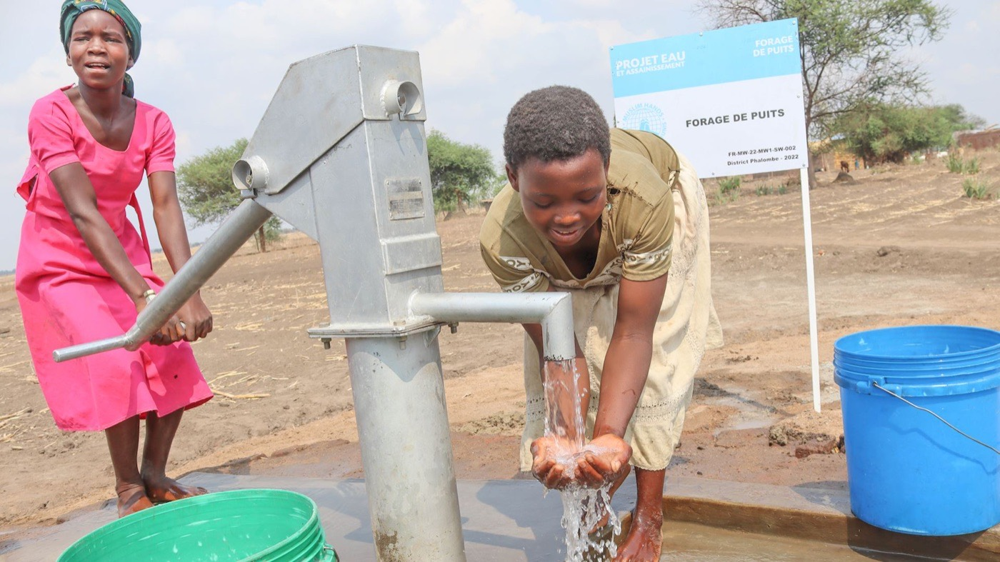
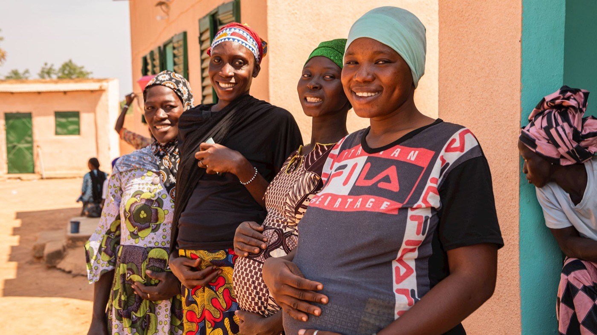
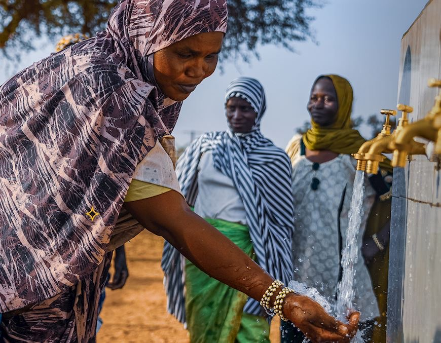

- 0 € de frais : 100 % de la collecte rejoint le projet choisi
- Chaque participant reçoit son propre reçu fiscal, 66 % ou 75 % déductibles
- Bilan et photos du projet à partager avec tous les participants
Pourquoi une cagnotte chez Muslim Hands plutôt qu'entre particuliers ?
Dans une cagnotte classique, une personne collecte puis reverse : elle seule reçoit le reçu fiscal, la plateforme prélève des frais, et les participants ne savent jamais ce que leur argent est devenu. Chez Muslim Hands France, la cagnotte est une page de collecte ouverte sur notre propre site : chaque participant donne directement à l'association, reçoit son reçu fiscal par e-mail (66 %, ou 75 % pour les repas et l'aide aux personnes en difficulté en France) et son don est tracé jusqu'au projet.
Il n'y a aucun frais de plateforme, et vous recevez le bilan du projet, plaque, photos, fiche de l'enfant, à partager avec ceux qui ont contribué. Pour un puits au nom d'un défunt, c'est la garantie que chaque euro de la famille et des amis arrive au village.

À quelle occasion créer une cagnotte ?
Pour un défunt
La famille et les amis financent un puits, une part de waqf ou un parrainage au nom de la personne disparue : une sadaqa jariya qui agit pour elle, année après année.
Anniversaire, mariage
À la place des cadeaux, vos invités offrent un forage ou un élevage à une famille. Le certificat est au nom des mariés ou de l'enfant.
Naissance et aqiqa
Réunissez les proches pour l'aqiqa du nouveau-né et un parrainage à son nom : son premier geste de générosité.
Ramadan et dix dernières nuits
Un défi collectif pendant le mois : iftars à Gaza, colis au Soudan, zakat al fitr pour les familles de France.
Défi sportif, classe, entreprise
Course, randonnée, tournoi, collecte de classe ou de service : chaque kilomètre ou chaque participant finance un objectif visible.
Mosquée et association
Une cagnotte par mosquée ou par association pour un puits communautaire, avec le bilan à afficher à l'entrée.
Comment ça marche ?
Choisissez le projet
Un puits, un forage, une pompe, un parrainage, une sadaqa jariya, une urgence ou le fonds de votre choix, et l'objectif en euros.
Personnalisez la page
Titre, photo, quelques lignes sur l'occasion ou la personne honorée. La page est en ligne en deux minutes.
Partagez le lien
Par message, e-mail ou réseaux sociaux. Chaque participant donne en ligne, en toute sécurité, et reçoit aussitôt son reçu fiscal.
Recevez le bilan
La somme collectée s'affiche en temps réel. Une fois le projet réalisé, vous recevez plaque, photos et bilan à partager.

Quel objectif choisir ?
Les montants sont ceux de nos fiches de don, revus chaque trimestre. Un objectif dépassé finance un second ouvrage ou rejoint le fonds du projet.
| Don | Ce qu'il permet | Fiche |
|---|---|---|
| 350 € | Une pompe à eau manuelle pour une famille élargie | Voir |
| 468 € | Un an de parrainage d'un orphelin (39 € par mois) | Voir |
| 350 € | Une machine à coudre et une formation pour une mère de famille | Voir |
| 1 000 € | Dix parts de waqf, un capital qui agit pour toujours au nom d'un proche | Voir |
| 2 500 € | Un puits communautaire pour 1 000 personnes, avec plaque au nom de votre choix | Voir |
| 4 500 € | Un forage solaire pour un village entier | Voir |
| Libre | Une urgence : Gaza, Soudan, Yémen, Somalie, Liban, Afghanistan | Voir |
Ouvrir ma page de collecte
Deux minutes suffisent. Vous pourrez modifier le titre, la photo et l'objectif à tout moment. Dans le site réel, ce formulaire ouvre l'outil de collecte entre pairs de notre plateforme de don.
Cagnotte et réduction d'impôt
Chaque participant donne directement à Muslim Hands France, association d'intérêt général : il reçoit par e-mail son propre reçu fiscal, ouvrant droit à une réduction d'impôt sur le revenu de 66 % du montant, ou de 75 % pour les projets de repas et d'aide aux personnes en difficulté en France. Pour un puits à 2 500 € financé par dix amis à 250 €, chacun ne dépense réellement que 85 €. Tout savoir sur la déduction fiscale.

Questions fréquentes sur la cagnotte solidaire
Qu'est-ce qu'une cagnotte solidaire ?
Une page de collecte à votre nom, ouverte sur le site de Muslim Hands France, où vos proches versent directement à l'association pour le projet que vous avez choisi : un puits, un parrainage, une sadaqa jariya, une urgence. Vous fixez l'objectif, vous partagez le lien, nous nous occupons du reste.
Chaque participant reçoit-il un reçu fiscal ?
Oui. Contrairement à une cagnotte entre particuliers où une seule personne reverse ensuite la somme, chaque don est fait directement à l'association : chaque participant reçoit son reçu fiscal par e-mail (66 % ou 75 % de réduction d'impôt selon le projet) et son don est tracé jusqu'au projet.
Y a-t-il des frais ?
Aucun frais de plateforme. Les frais bancaires de paiement sont pris en charge par l'association ; 100 % de la somme collectée rejoint le fonds du projet choisi.
Puis-je créer une cagnotte au nom d'un défunt ?
Oui, c'est l'usage le plus fréquent. La famille et les amis se réunissent pour financer un puits, une part de waqf ou un parrainage au nom de la personne disparue : une sadaqa jariya dont la récompense lui revient aussi longtemps que l'ouvrage sert. Son nom figure sur la plaque du puits ou le certificat.
Que se passe-t-il si l'objectif n'est pas atteint ?
Les dons sont acquis au projet : si un puits à 2 500 € n'est financé qu'à 1 800 €, nous vous proposons de prolonger la collecte, de compléter, ou d'affecter la somme à un ouvrage moins coûteux (une pompe à eau à 350 €, par exemple) au même nom. Rien n'est perdu et chacun garde son reçu.
Comment suivre la cagnotte et le projet ?
Votre page affiche la somme collectée en temps réel et la liste des participants qui ont accepté d'apparaître. Une fois le projet réalisé, vous recevez le bilan et les photos (plaque, inauguration, fiche de l'enfant parrainé) à partager avec tous les participants.

À plusieurs, on va plus loin.
Dix amis à 250 € : un puits pour 1 000 personnes, une plaque au nom de votre choix, et un reçu fiscal pour chacun.
Créer ma cagnotte